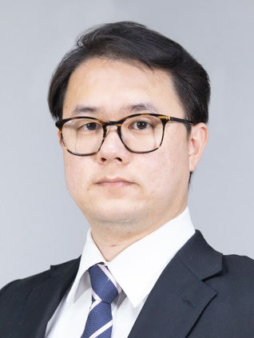

อาจารย์ประจำ / Committee

รศ.ดร.จักรกฤษณ์ สุทธากรณ์ (Johns Hopkins University, USA)
Jackrit Suthakorn, Ph.D.
Founding Executive Director
üìß Email: jackrit.sut[AT]mahidol.ac.th
Dr. Jackrit Suthakorn is a visionary leader and founding director of BART LAB with extensive expertise in medical and surgical robotics.
He holds a Ph.D. from Johns Hopkins University and completed executive programs at MIT Sloan.
Currently, he serves as Chair of IEEE Robotics Thailand and President of Thailand RoboCup Robotics Association.
His research focuses on advancing robot-assisted surgery, rehabilitation robotics, and hospital automation.
Dr. Jackrit bridges cutting-edge technology with real-world healthcare impact.
URL: www.bartlab.org / www.bartlabmahidol.org
URL: www.bartlab.org / www.bartlabmahidol.org
อ.ดร.ทรงพล องค์วัฒนกุล (Alabama)
Songpol Ongwattanakul, Ph.D.
Executive Director
üìß Email: songpol.ong@mahidol.ac.th
Research Interests: Medical Image Processing.
Dr. Songpol Ongwattanakul is a distinguished scholar and director of the Biomedical Cloud Computing Laboratory at Mahidol University. He holds a Ph.D. in Electrical Engineering and an M.Sc. in Computer Science from top universities. His research spans medical image processing, medical IoT, AI in medicine, virtual reality, and medical navigation. Dr. Ongwattanakul pioneers cloud computing applications to transform healthcare and big data systems.
Dr. Songpol Ongwattanakul is a distinguished scholar and director of the Biomedical Cloud Computing Laboratory at Mahidol University. He holds a Ph.D. in Electrical Engineering and an M.Sc. in Computer Science from top universities. His research spans medical image processing, medical IoT, AI in medicine, virtual reality, and medical navigation. Dr. Ongwattanakul pioneers cloud computing applications to transform healthcare and big data systems.
อ.ดร.นันทิดา นิลหุต (Mahidol University)
Nantida Nillahoot, Ph.D.
Innovation Director
üìß Email: nantida@bartlab.org
Research Interests: Haptic Virtual Reality-based Surgical Training System: Hardware, Software and Testing
Dr. Nantida Nillahoot is a Ph.D. scholar at BART LAB specializing in tele-surgical robotic control systems with real-time haptic feedback. Her award-winning research in robotic rescue competitions demonstrates her innovative approach. She focuses on advancing minimally invasive surgical technologies to improve precision and patient outcomes.
Dr. Nantida Nillahoot is a Ph.D. scholar at BART LAB specializing in tele-surgical robotic control systems with real-time haptic feedback. Her award-winning research in robotic rescue competitions demonstrates her innovative approach. She focuses on advancing minimally invasive surgical technologies to improve precision and patient outcomes.
อ.ชลลดาวัลย์ มูลใจตา (Mahidol University)
Choladawan Moonjaita
Research Project Director
üìß Email: choladawan.moo[AT]mahidol.ac.th
Research Interests: Robot design.
A highly esteemed robotics researcher pursuing a Ph.D. at Kyoto University under the guidance of leading experts in the field. With a Master’s degree in Biomedical Engineering from Mahidol University, numerous international robotics awards have been earned, showcasing exceptional talent and innovation. Expertise spans advanced robot design for critical medical and rescue applications, contributing significantly to advancements in human safety and healthcare. As a co-organizer of the Thailand Rescue Robot Championship, actively mentoring students and fostering the next generation of robotics enthusiasts. Committed to pushing the boundaries of robotics, continually striving to enhance human well-being through cutting-edge technology and research.
A highly esteemed robotics researcher pursuing a Ph.D. at Kyoto University under the guidance of leading experts in the field. With a Master’s degree in Biomedical Engineering from Mahidol University, numerous international robotics awards have been earned, showcasing exceptional talent and innovation. Expertise spans advanced robot design for critical medical and rescue applications, contributing significantly to advancements in human safety and healthcare. As a co-organizer of the Thailand Rescue Robot Championship, actively mentoring students and fostering the next generation of robotics enthusiasts. Committed to pushing the boundaries of robotics, continually striving to enhance human well-being through cutting-edge technology and research.

อ.ดร.เชน ตรีรัตนกุลชัย (Imperial College, London)
Shen Treratanakulchai, Ph.D.
New Knowledge Manager
üìß Email: shen.tre[AT]mahidol.ac.th
Research Interests: Medical Robotics, Soft Robotics, Manipulator, Mechatronics
Dr. Shen Treratanakulchai is a lecturer at Mahidol University with a Ph.D. from Imperial College London. His expertise covers medical, soft, and rehabilitation robotics, focusing on mechatronics and human-machine interfaces. He serves as Secretary of IEEE Robotics and Automation Society, Thailand Region. Dr. Shen combines academic excellence with leadership to foster innovation in biomedical engineering.
Dr. Shen Treratanakulchai is a lecturer at Mahidol University with a Ph.D. from Imperial College London. His expertise covers medical, soft, and rehabilitation robotics, focusing on mechatronics and human-machine interfaces. He serves as Secretary of IEEE Robotics and Automation Society, Thailand Region. Dr. Shen combines academic excellence with leadership to foster innovation in biomedical engineering.

อ.ดร.ยุทธนา อิสสระชัยยศ (Case Western Reserve University, USA)
Yuttana Itsarachaiyot, Ph.D.
New Knowledge Director
üìß Email: jackrit.sut[AT]mahidol.ac.th
Research Interests: Medical robotics, cardiovascular catheter navigation, user-device interfacing systems, and robotic technologies for surgical training assistance
Dr. Yuttana Itsarachaiyot holds a Ph.D. from Case Western Reserve University and master’s degrees from Johns Hopkins University and Mahidol University. His expertise includes medical robotics, cardiovascular catheter navigation, and user-device interfacing. He develops robotic systems to assist surgical training and enhance clinical procedures.
Dr. Yuttana Itsarachaiyot holds a Ph.D. from Case Western Reserve University and master’s degrees from Johns Hopkins University and Mahidol University. His expertise includes medical robotics, cardiovascular catheter navigation, and user-device interfacing. He develops robotic systems to assist surgical training and enhance clinical procedures.